Support 工具 Set UP
原理：
如果硬件设备不够，满足下面这个共享的基础条件也行
做笔试/面试的电脑设备A， A的画面输出到另一台设备B上面， B设备使用discord共享出A传过来的画面给supporters看，然后需要另一台手机C用于查看supporters发送的消息
为什么要这样做？
因为面试官/oa平台一般要求候选人共享全屏，甚至查看后台。所以设备A的后台不可以留下任何通讯软件。
1. 准备硬件工具
windows
- 设备A: 只需要用于面试的windows电脑 (建议笔记本，方便放置手机)
- 设备C: 看support 消息的手机
mac
- 设备A: 需要用于面试的 mac 电脑(建议笔记本，方便放置手机)
- 一根 c to c 数据线 （用于有线画面数据传输）
- 设备B: ipad (ipad 需要能开启随航，镜像 mac 画面)
- 设备C: 看 supporter 消息的手机
如果没有 ipad： 只要能找到办法把你的画面输出到另一台设备上去，比如镜像到 imac 上，这台设备就能用。
2. 硬件工具准备
设备A
windows
由于 windows不需要设备B，我们在Windows电脑上下载discord，共享画面出来，然后关闭discord，即最小化到右下角托盘
mac
在设备A上，我们需要准备将画面共享到设备B上。需要一根 type-c to type-c 的数据线用于 有线 连接 macbook 和 ipad。蓝牙也是可以做到的，但是一般20分钟左右就断联了，所以禁止使用蓝牙来镜像画面。具体如何镜像在后面的章节。
设备B (建议 ipad)
下载discord客户端作为屏幕共享工具
ipad 版本越新越好，lightening 接口的 ipad 似乎无法作为 mac 的镜像屏幕 （建议提前验证自己手里的 ipad 是否可用于屏幕共享）
设备C
手机上下载notion， 注册好账号
3. 软件工具 set up
设备A或B的 discord 设置：
画面共享的设置：
点击下方按钮
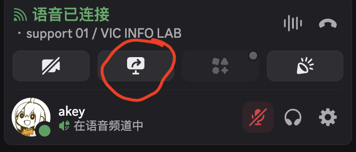
共享时选择共享全屏并且共享设备声音：
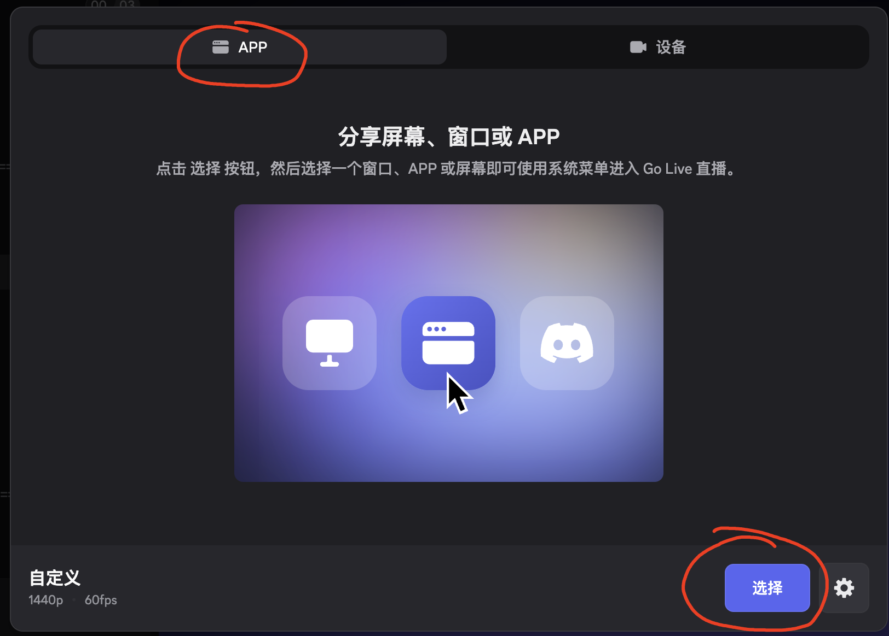
不要勾选静音直播
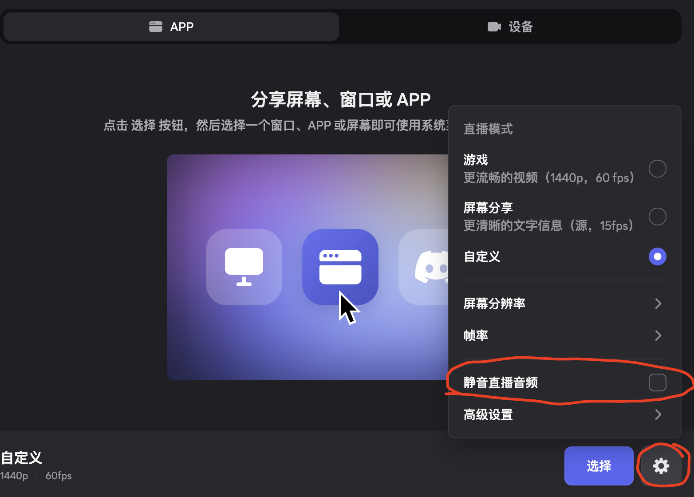
然后在屏幕的右上角，点击共享全屏

关闭通知：
点击进入设置
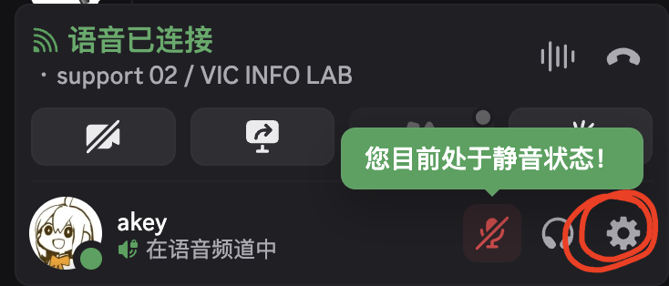
在左侧找到 通知 关闭这里的所有选项，保留关闭所有通知声音
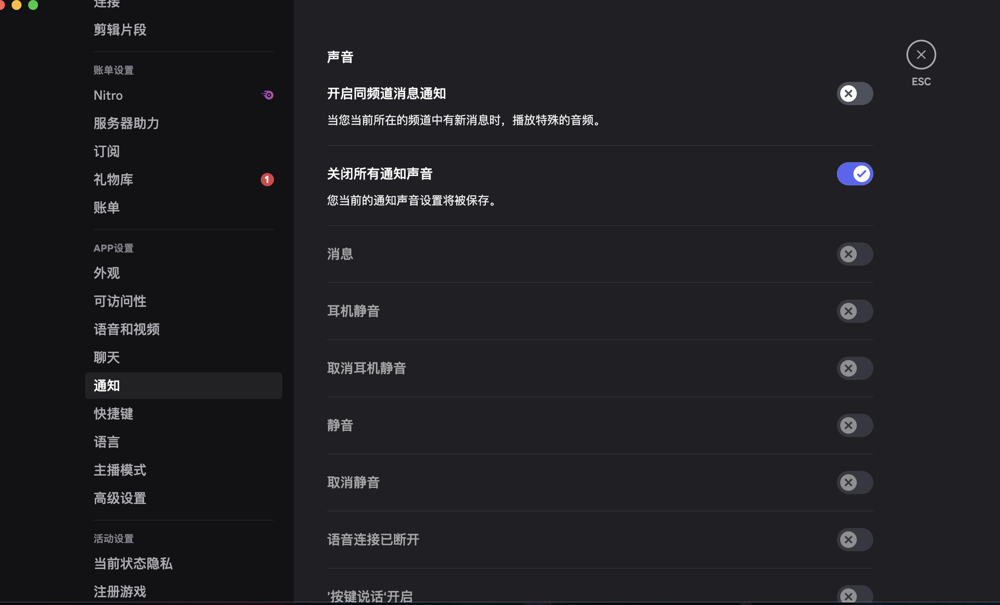
设备C notion 设置
手机上的界面效果如下：
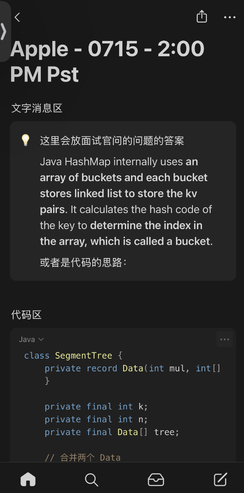
参考这个链接，每次面试/笔试都创建一个新的 notion page
1. 创建一个 empty page
page 的标题为：client - 面试日期/时间
2. 创建文字区
敲入 /callout 会出现标注区域，可以在这个区域内输入文本
3. 创建代码区
敲入 /code
注意，代码一行显示的内容有限，你需要在面试/笔试过程中，时常用手划动
4. 将你的 notion page 共享给 supporter
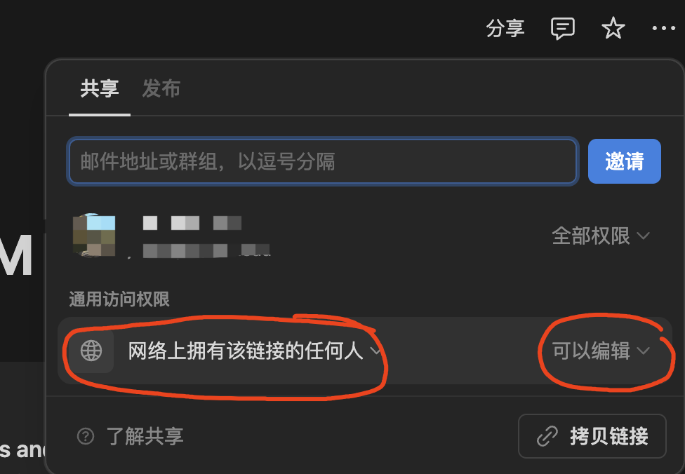
4. 最重要的一点 屏幕共享
windows:
直接在discord里共享（见上一步）
mac
设备A
使用数据线有线连接到ipad后 点击菜单栏这个图标，找到屏幕镜像
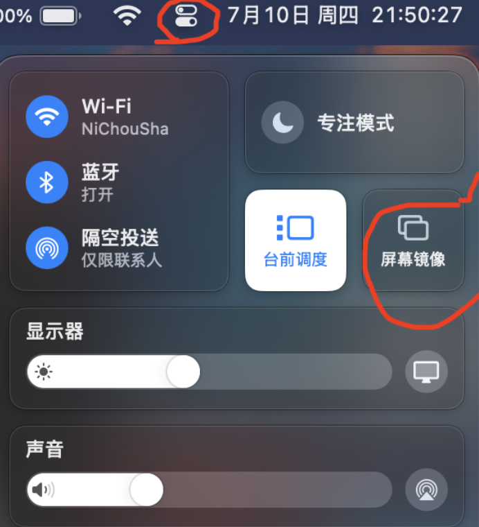
选择镜像到你的 ipad
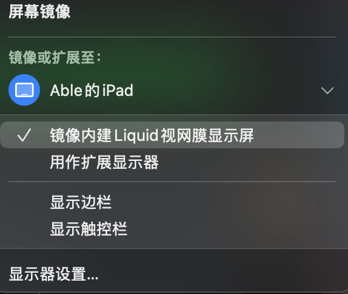
设备B (ipad)
下图中的这个软件点进去就是镜像过来的画面

首先，确认是有线连接：
mac画面镜像过来后，关闭 wifi 和蓝牙，确认 mac 的画面依旧存在
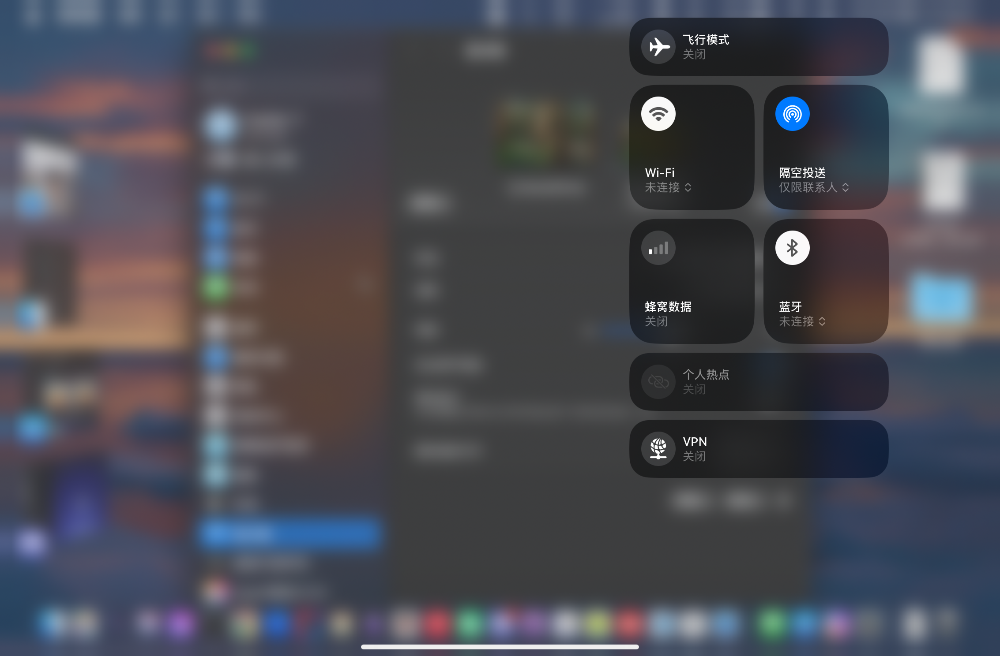
在ipad上共享屏幕：
加入 channel 后，选中这个界面中间这个小横线往上拉
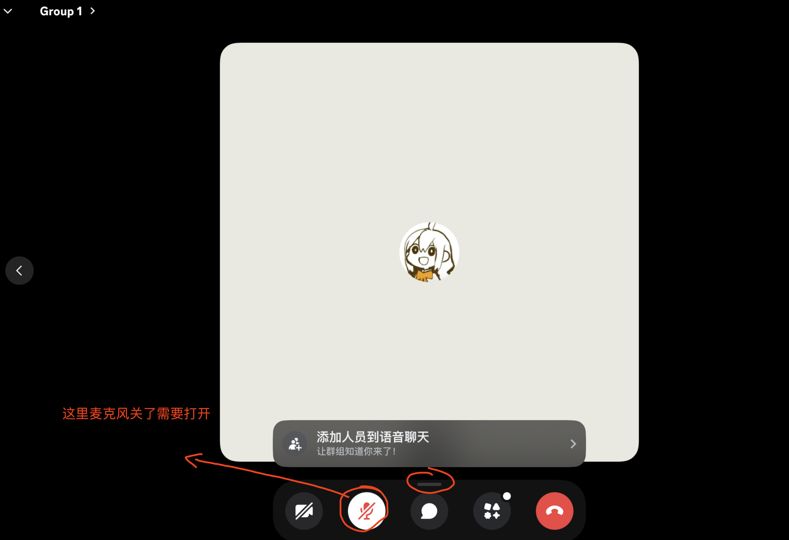
在拉出来的选项中，点开 共享您的屏幕
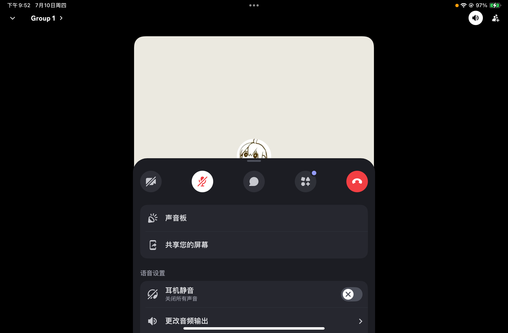
出现这个画面表示已经在共享屏幕了

笔试/面试开始前 checklist
common checkist
设备C：
- 在做笔试面试时，手机竖在屏幕中间偏右位置（笔试基于平台调整）
- 手机打开勿扰模式、静音开关打开、媒体音量调到最低
- 手机关闭振动，打开屏幕常亮
- 建议套上手机壳（防止滑动）
- 面试时，尽量避免可能有电话打入，可以开启飞行模式再打开wifi
- 打开深色模式，notion 也选择深色模式
设备B - 关闭降噪：
discord的降噪关闭， 可以让supporter更好听清楚面试官的声音
如果你的设备B是ipad
选中噪音抑制 中的暂无就可以关闭降噪
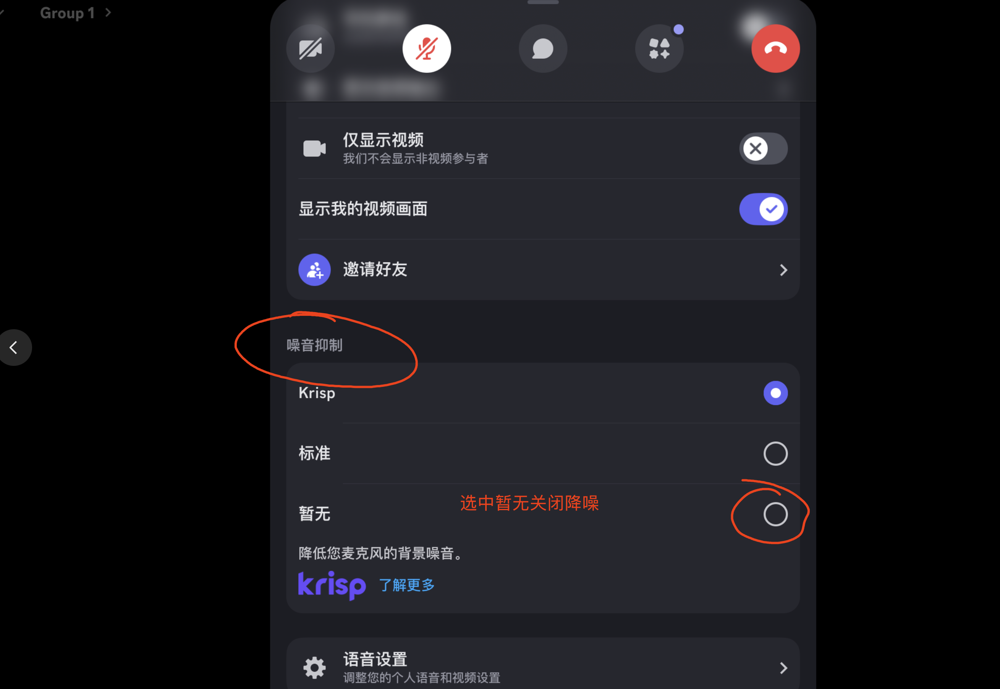
如果你的设备B是电脑
（图片中是打开的，要关掉）
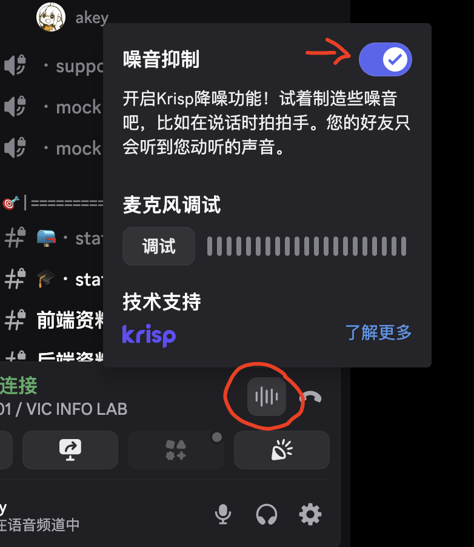
设备A：
- 面试用的浏览器建议使用 chrome
- 面试用电脑打开勿扰模式（Windows在右下角消息中心关闭通知）
- 关闭全部后台软件，除了面试需要用到的（比如浏览器）
- 是笔记本的话，需要插电
- 桌面清空（不要出现文件、图片之类的在桌面上）
- Mac设备隐藏不必要的菜单栏图标
- 和 supporter 确认电脑的画面清晰，可以听到自己的说话声，可以听到电脑播放的音频
如何隐藏菜单栏图标？
下载软件 ibar (免费版即可)
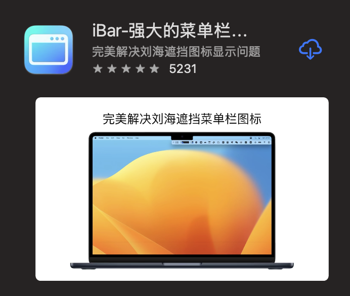
下载好软件后，按照软件提示开启权限，确保菜单栏里不显示多余的图标，尤其是这个屏幕镜像的图标
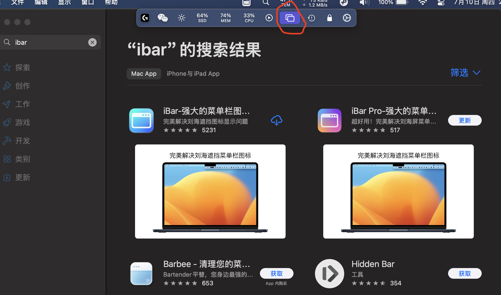
屏幕镜像的图标也可以通过在设置中禁用
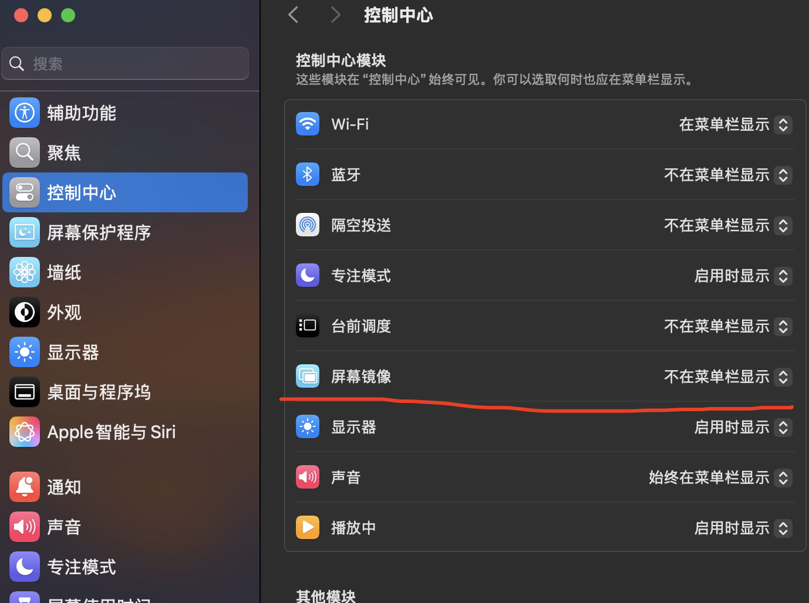
当你在面试/笔试中共享屏幕后，菜单栏会出现一个图标，这是正常的
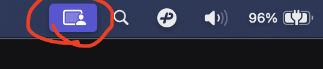
其他笔试注意事项
- 做 OA 的时候浏览器缩放调成 100%，如果还是显示内容过少的话调小，不要调到大于 100%
- Glider 这个平台在点开链接后，开始做笔试前就会开始录音录像，确保做题前也保持安静环境
- 做 OA 时尽量保持安静，确保眼神不乱移动，自己的脸尽量在屏幕中央
其他面试注意事项
- 面试过程中可以用手轻微横向挪动手机，面试官看不到你的手
- 写代码时多看文字消息
- 代码一行显示不全时，需要用手左右划动代码区
- 眼神移动的幅度不要太大
当观众的注意事项
- 全程闭麦
- 减少进出 channel
- 不要在 channel 里发文字消息